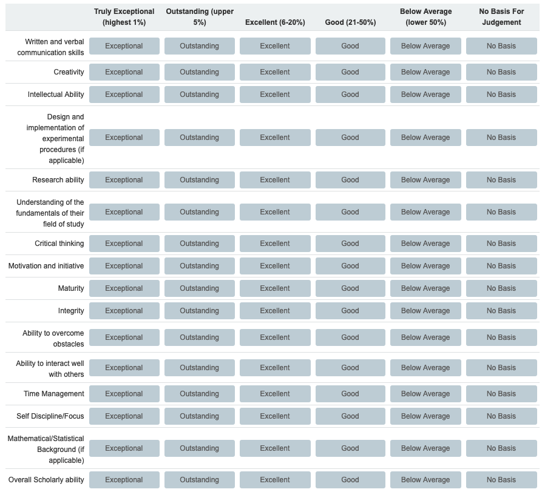

Effective December 23, 2020, I will no longer be accepting letter requests for the next admission cycle, that is, any application with a deadline before the end of the Spring 2021 semester. Given the classes and number of students I teach, my letter writing output is already very high, but this cycle I have accepted a record number of letter requests that far exceeds my norm. I worry that if I continue to accept requests, I will be unable to fulfill my existing writing commitments in a timely manner.
Hello!
If you are reading this, you have requested a letter of recommendation.1 Tentatively, I will do so, but I would like to make you aware of a set of policies that I adhere to when navigating the letter writing process. Please read all of the following carefully. Letter writing usually happens during breaks or the busy parts of the semester, so you will need to communicate effectively and quickly. Please keep email communications concise. Bullet points are better than paragraphs. When emailing:
First, you need to know a little bit about me. I am a Teaching Assistant Professor. This is a non-tenure track position, where I spend the majority of my time focused on teaching, as opposed to research. You need to know this because it (negatively) effects the strength of my letter. It also makes a letter from me less appropriate for PhD programs.
Next, the most important thing you need to know: I will only write about information that I obtained myself. That is, I will not take suggestions from the applicant about what to write. I may request some information from you, but it will mostly be used to help my memory. It is possible that the only information I know about you is the course you took with me, the grade you received, and how you ranked compared to your peers. I will often be asked to submit the information seen in the image below. Unless we discuss otherwise, I will likely select “No Basis for Judgment” for many or possibly all categories. I am willing to write a letter that says this, but this is not a strong letter.

Also, unless we have directly worked together beyond a student-teacher relationships, a letter from me will likely not be individualized to specific programs. Instead, I will use the same letter for all applications. If you have worked on an individual research project or served as course staff, you can expect a much more detailed letter that may be tailored to individual programs.
Finally, in order for me to agree to write a letter, three conditions must be satisfied.2
If you have any questions about the above policies, you should come see me in person if at all possible.3
If you have read the above and would like to proceed, please read on.4
After you have read the information above, send an email with the following information:
If I agree to write for you after your initial email, it’s time to add me as a reference to all of your applications. While adding my information to applications, please note:
(217) 333-2167After you have added me to each of your applications, send me an email letting me know you have done so. In that email, re-list everything from Email One, as well as:
You may not hear from me after Email Two. I will likely file it away in a folder of many other letter of recommendation requests I have received so that I can batch process them on some weekend where I have time to do so. If I have not submitted a letter within a week of the deadline, it is your responsibility to send me a reminder email. Do not hesitate to send reminders. I often receive hundreds of notification emails about letters I need to submit. The probability of me missing one or forgetting something is high.
At the end of this process, please share the results with me! I write so many letters, but rarely am I told about the result. Also note that, in the past some students have been so kind as to attempt to thank me with a small gift. Please note that ethics rules prohibit me from accepting any such gifts, so I will need to decline any such offer. However, knowing that a student of mine was accepted to a graduate program is all the thanks I need. So please let me know the result of your application process!
Or for some weird reason you are reading my website.↩︎
Exceptions are possible if discussed in person well in advance of application time.↩︎
In reality, it would be best to ask me for a letter in person.↩︎
Apologies if these policies seem authoritarian and harsh. Given my difficulty denying letter requests, I often end up writing a lot of letters. These policies were created to become efficient enough to process as many letters as possible.↩︎